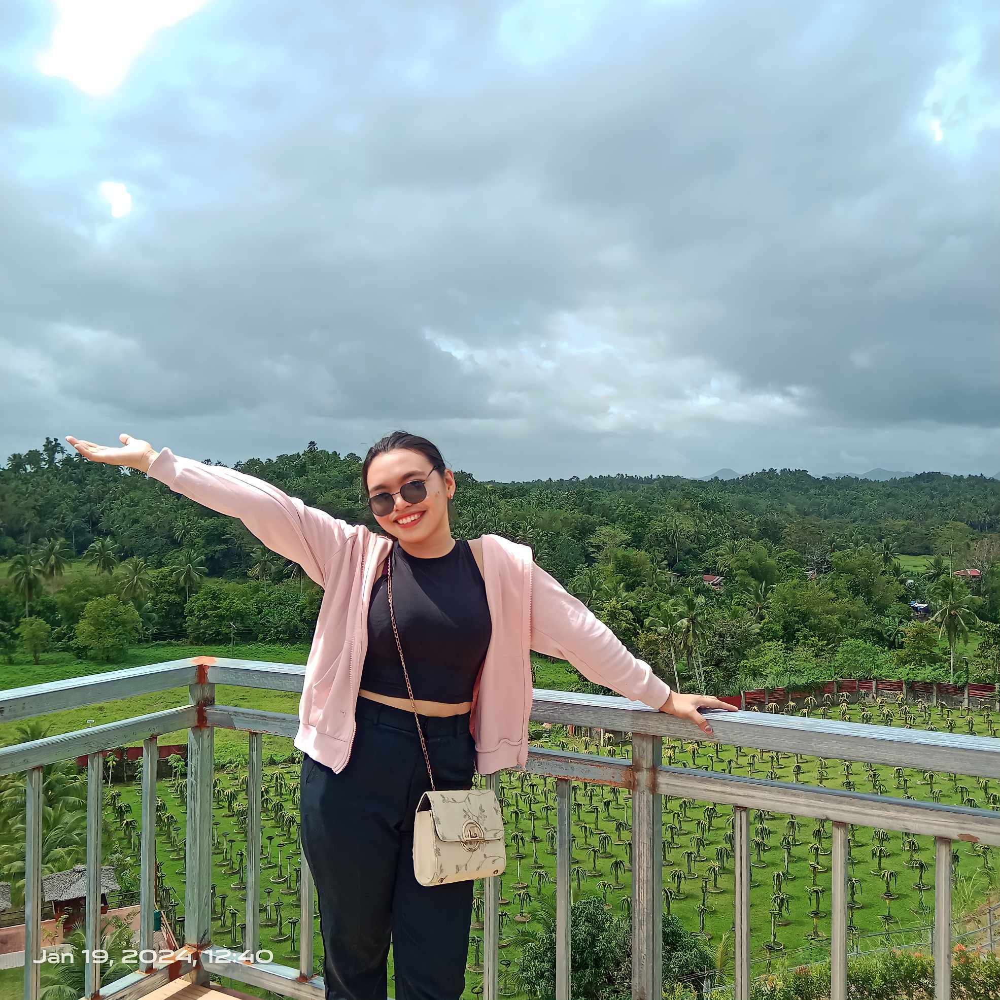
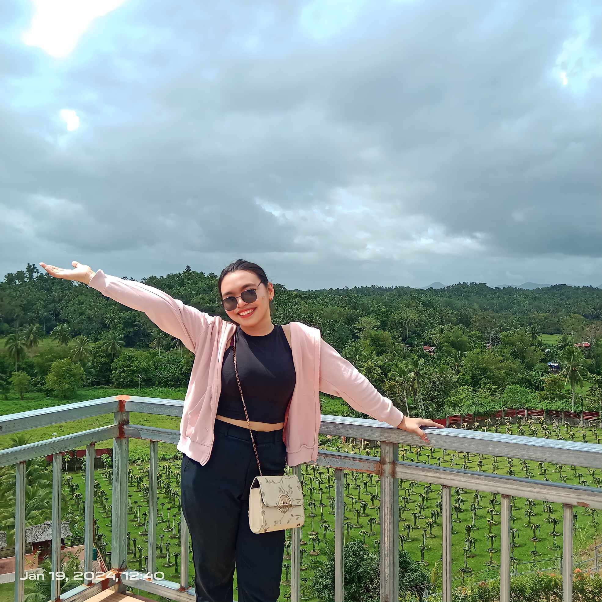

Hi there! Welcome to my website!
You can call me Ann for short, a BSIS student at Northwest Samar State University (NwSSU). I enjoy strengthening my current skillset and learning new information about web design. I'm glad destiny brought you to my page. Welcome, keep exploring, maybe you'll find something inspiring and if you have any questions don't hesitate to reach out. Hope this page serves you well.
About Me
I'm Mary Ann B. Castillo, 22 years old and born on March 13, 2002. I live in Brgy. Dagum Calbayog City Samar. I studied in Northwest Samar State University (NwSSU), a second year college Bachelor of Science in Information System, a girl who strong and independent woman who knows what she wants in life. I am confident and always stay true to myself, no matter what others might think. I am also a very compassionate person and always try to see the best in people. My life is a mixture of moments, some happy moments and others not so much, but regardless, these moments have made me the person that I am today and I don't regret anything that had happen.
My Strength is that I am always ready to take up new challenges and strive for excellence. This is because I believe success and failures are the best way to sculpt ourselves to reach our goals. And I believe in myself and my hard work and want fulfillment in everything.
Here's a short video of being me:
Education
Primary
Dagum Elementary School
Dagum Elementary School - where I developed a strong foundation in various subjects and nurtured a love for learning.
Secondary
Calbayog City National High School
I continued my studies at Calbayog City National High School. During these formative years. Secondary school has been an unrelenting path. These six years of secondary have had their excitement and their downfalls. My life had transformed into one that no individual could ever envision persevering through, an experience so unpleasant that it change my philosophy and point of view.
Tertiary
Northwest Samar State University
Currently, I am pursuing my major in BSIS at Northwest Samar State University. Here, I have engaged in rigorous coursework, hands-on projects, and various extracurricular activities that have significantly contributed to my personal and professional growth.
Skills
Communication
helps me as a student connect with others, express empathy, resolve conflicts, and establish a supportive network.
Group work
gives students the opportunity to engage in process skills critical for processing information, and evaluating and solving problems.
Time management
is of utmost importance to balance their studies with other daily essential tasks.
Hobbies
Music
can calm my soul. This is enjoyable hobby that allows me to express myself.
Cooking
when I get tired of an exhausting routine. I cooked small meal.
Socializing
is any competence facilitating interaction and communication with others where social rules and relations are created, communicated, and changed in verbal and nonverbal ways.
Photos
There is only you and your camera. The limitations in your photography are in yourself, for what we see is what we are. My photos are automatically organized and searchable so you can easily find the photo you're looking for. Easily save and share what matters.

 
